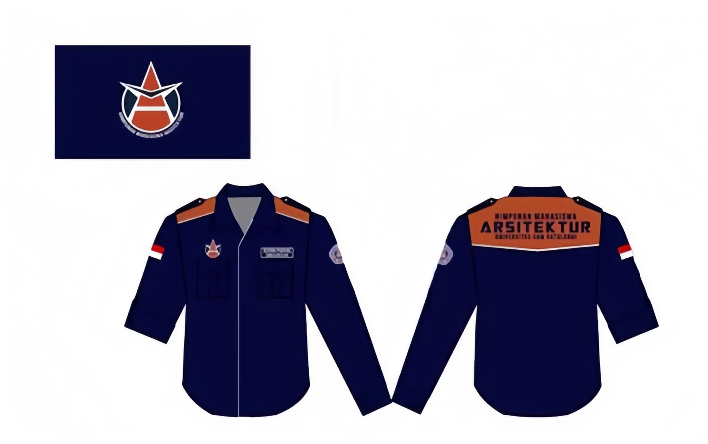

Deskripsi Organisasi
Himpunan Mahasiswa Jurusan Arsitektur Fakultas Teknik Universitas Sam Ratulangi Manado disingkat HIMAJU ARS FT-UNSRAT yang selanjutnya diketahui sebagai Himpunan Mahasiswa Arsitektur (HMA) adalah Organisasi Mahasiswa Intra Kampus yang berada di Fakultas Teknik Universitas Sam Ratulangi Manado, merupakan kelengkapan struktural jurusan Arsitektur Fakultas Teknik Universitas Sam Ratulangi Manado.
Berkedudukan di Jurusan Arsitektur Fakultas Teknik Universitas Sam Ratulangi Manado dan berada di bawah Musyawarah Besar Mahasiswa Jurusan Arsitektur Fakultas Teknik Universitas Sam Ratulangi Manado serta tidak menjalankan politik praktis. Selanjutnya dalam pelaksanaan tugas pokok dan tanggung jawab Organisasi Kemahasiswaan berada di tingkat jurusan Arsitektur Fakultas Teknik Universitas Sam Ratulangi Manado.
Visi dan Misi
Visi
Mewujudkan Himpunan Mahasiswa Arsitektur sebagai wadah pengembangan potensi, kreativitas, dan kolaborasi guna mendorong terbentuknya anggota yang unggul, inovatif, serta berdaya saing tinggi.
Misi
- 1. Memfasilitasi pertukaran ilmu, pengalaman, dan ide melalui kolaborasi dengan berbagai pihak.
- 2. Wadah keterampilan seluruh anggota HMA yang kreatif, inovatif, dan berdaya saing tinggi.
- 3. Menjadi wadah aspirasi dan komunikasi anggota himpunan yang responsif dan berdampak.
- 4. Mendorong peran anggota HMA dalam kegiatan internal maupun eksternal himpunan.
Tugas, Fungsi, dan Tanggung jawab
Tugas
HMA berkomitmen untuk menyelenggarakan kegiatan pendidikan, penelitian, pengabdian masyarakat, serta kegiatan keilmuan, penalaran, dan kesejahteraan mahasiswa yang selaras dengan Tri Dharma Perguruan Tinggi.
Fungsi
HMA berfungsi sebagai penyelenggara, penghubung, pemberi gagasan, dan jembatan sinergi antara mahasiswa, jurusan, dan pihak eksternal dalam pengembangan minat dan bakat mahasiswa.
Tanggung jawab
HMA bertanggung jawab langsung kepada mahasiswa Jurusan Arsitektur serta kepada pimpinan Fakultas dan Jurusan dalam menjalankan tugas dan program organisasinya secara transparan dan terkoordinasi.
Bendera
Bendera merupakan lambang identitas organisasi yang sudah tak dapat diubah. Bendera memiliki logo yang ditempatkan di tengah-tengah. Warna dasar bendera adalah warna jingga terakota.
PDH (Pakaian Dinas Harian)
Pakaian Dinas Lapangan (PDL)/Pakaian Dinas Harian (PDH) merupakan atribut fisik yang berbentuk kemeja dan berfungsi sebagai almamater Himpunan.
Lagu Organisasi
MARS HMA
Satu tekad berkarya untuk negeri
Semangat juang untuk masa depan
Dengan Tri Dharma membangun bangsa
Angkatlah Panjimu satukan lah mimpimu
Himpunan mahasiswa Arsitektur Unsrat
Jayalah selama-lamanya
Solidaritas tanpa batas
Maju terus pantang mundur
Menembus peradaban
Struktur Organisasi

Penjelasan tentang struktur organisasi.
Anggota
Daftar nama-nama anggota organisasi.
Alumni
Daftar alumni dan profil singkat mereka.
Bank Literatur
E-BOOK ARSITEKTUR
Dari Biro Kepustakaan Arsitektur & Perencanaan Wilayah dan Kota menyediakan kumpulan bacaan literatur yang dapat menunjang perkuliahan mahasiswa dalam ilmu Arsitektur.
Kunjungi link berikut ini untuk mengakses koleksi bacaan literatur yang tersedia:
Koleksi E-book akan terus bertambah judul dan materi baru di setiap akhir bulan
Terima kasih dan selamat membaca!